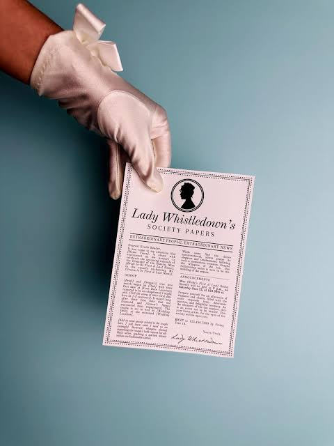

Escándalo en el Baile de la Temporada
Se rumorea que cierta joven debutante ha llamado la atención de la persona menos esperada...
LADY WHISTLEDOWN
"Querido lector: si hay algo que esta autora ama más que un secreto, es un escándalo a plena luz del día..."
Se rumorea que cierta joven debutante ha llamado la atención de la persona menos esperada...
Ningún secreto está a salvo cuando la tinta fresca de esta pluma recorre las calles de Londres.
